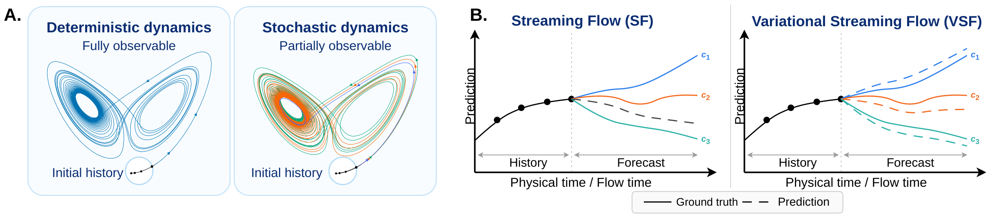
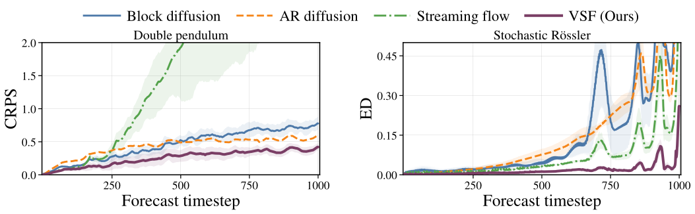
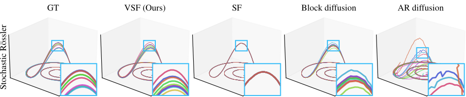
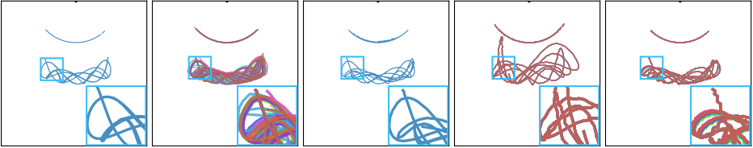
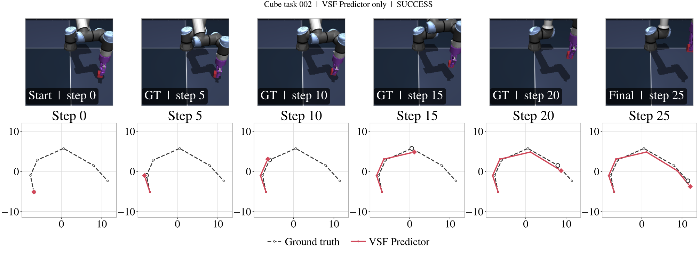

One past, two futures
Both futures remain at x = 0 until the bifurcation time τ. Before that point, the future branch is genuinely unresolved.
Probabilistic forecasting in physical time
One latent. One coherent rollout. Many plausible futures.
1Lawrence Berkeley National Laboratory 2Georgia Institute of Technology 3KTH Royal Institute of Technology 4Nordita 5International Computer Science Institute *Work done while visiting ICSI/UC Berkeley

VSF adds a variational, trajectory-level latent to a physical-time velocity field. It preserves the direct rollout efficiency of Streaming Flow while turning a single deterministic forecast into a learned distribution over long-horizon futures.
Abstract
Probabilistic forecasting is essential when intrinsic randomness or incomplete observations allow the same observed state to evolve into multiple plausible futures. Flow matching can model those distributions, but generation requires integration through an auxiliary flow time in addition to the system’s physical evolution.
Streaming Flow avoids that extra generative clock by learning a velocity field directly in physical time. In its standard non-latent form, however, a fixed initial state and history determine only one future. Variational Streaming Flow (VSF) conditions the physical-time velocity on a latent variable inferred from dynamics during training and sampled from a prior at inference.
Across deterministic and partially observed stochastic systems, VSF improves long-horizon predictive accuracy and distributional fidelity. As a plug-in predictor for a JEPA-based world model, it also improves goal-directed planning while retaining one velocity-field evaluation per imagined transition.
Why a latent?
Two futures can share exactly the same physical past. Drag the 1σ tube-scale control from an extreme low-noise stress test through the paper-comparable regime: standard SF must hide the branch in physical-state differences, while an ideal latent carries that decision outside the physical state.

A motivating bifurcation model: as standard SF demands higher tube fidelity, the physical state must become more sensitive; an ideal latent can encode the future branch without that state-space bottleneck.
Move ετ in step 2. The SF characteristics, posterior branch mean, tube, and step-4 marker update together.
Both futures remain at x = 0 until the bifurcation time τ. Before that point, the future branch is genuinely unresolved.
The dashed blue/orange curves are the fixed data paths ξ±(t) = ±m(t). The solid green/red curves are exact marginal-SF characteristics ΦSFτ,t(±δp). On wider screens, the inset is the paper’s posterior branch mean E[B | Xt = x] at t = 0.60; the microscope below enlarges it on every screen.
Here PτSF = 𝒩(0, ετ2) and ετ = στ = W2(PτSF, δ0). For t > τ, the faint ribbons are the two component tubes around fixed means ±m(t), not the standard deviation of the full mixture. Slide left for better fidelity and higher sensitivity; slide right for a wider tube and lower physical-state sensitivity. The direct 0.01–1.00 control includes an extreme-fidelity extension below the paper panel’s visible range; its exact sensitivity is still computed and reported.
The left view exposes the matched probe convention used by this interaction. The right view enlarges the same posterior branch mean shown inside the paper-style panel.
The interaction uses δp/ετ = 0.01/0.18885 ≈ 0.05295, calibrated from the paper’s ετ = 0.18885 reference, and follows one fixed CDF rank as noise changes. Thus 2δp = . This coupling is a visualization convention; the theorem’s perturbation δ is independent at fixed ετ.
E[B | Xt = x] = tanh(xm(t)/σt2). At t = 0.60, its transition scale is ℓ = σt2/m(t) = . Exactly at τ, it is flat because m(τ) = 0.
The blue marker follows the same slider along the appendix curve −kΔt + C/ετ2; the dashed ideal-latent baseline stays at −kΔt. Both axes remain raw and linear. The paper-scale vertical window stays at −2–50; when log sensitivity exceeds 50, the marker pins to the ceiling while the readout reports its exact off-scale value. Across ετ = 0.01–1.00, log sensitivity falls from 10,673.40 to 0.65.
Figure-matched linear bifurcation with τ = 0.42, k = 1.4, and m(t) = 3.2(t − τ)+. As in the source figure, the posterior inset uses t = 0.60 and sensitivity uses t* = 0.72 (Δt = 0.30). The exact central state xτ = 0 remains a separator for every finite ετ; the paired off-center probes and marginal law converge to the target as ετ ↓ 0.
The analysis proves that an ideal latent construction can remove this particular fidelity–sensitivity bottleneck. It motivates VSF; it is not a blanket guarantee that every learned latent model eliminates rollout sensitivity.
Method
VSF augments the forecast dynamics with a latent z. One draw selects a coherent velocity field for the complete rollout.
An encoder observes local state, physical velocity, forecast time, and history to infer qφ(z | us, xs, s, h). Multiple posterior latents produce a set of candidate velocities.
Draw z ∼ 𝒩(0, I) once, hold it fixed, and advance the state directly in physical time. The rolling history changes with the generated trajectory; the latent remains the same.
Distributional objective
The generalized energy reconstruction balances two forces: match each predicted velocity to the observed velocity, while rewarding meaningful spread across latent-conditioned predictions. KL regularization aligns the inferred posterior with the prior used at test time.
Under aggregate posterior–prior alignment, the population objective controls the energy distance between the prior-predictive and true conditional velocity distributions.
Forecasting results
VSF is evaluated on fully observed deterministic double-pendulum, Rössler, and Lorenz systems, and on partially observed parameter-mixture Rössler and Lorenz systems.

| Model | Double pendulum CRPS ↓ |
Rössler CRPS ↓ |
Lorenz CRPS ↓ |
Runtime seconds ↓ |
|---|---|---|---|---|
| Block diffusion | 0.46 | 0.29 | 0.31 | 30.2 |
| AR diffusion | 0.43 | 0.35 | 0.86 | 78.2 |
| Streaming Flow | 2.12 | 0.16 | 1.42 | 6.4 |
| VSF Ours | 0.25 | 0.03 | 0.16 | 7.2 |
| Model | Rössler W₁ ↓ |
Rössler ED ↓ |
Lorenz W₁ ↓ |
Lorenz ED ↓ |
Runtime seconds ↓ |
|---|---|---|---|---|---|
| Block diffusion | 8.88 | 12.67 | 19.88 | 13.73 | 21.8 |
| AR diffusion | 16.21 | 11.46 | 25.64 | 5.60 | 42.4 |
| Streaming Flow | 4.53 | 5.00 | 58.12 | 89.84 | 7.5 |
| VSF Ours | 2.62 | 1.28 | 15.95 | 5.19 | 6.7 |
Selected baselines and metrics are shown for readability. The paper reports eight baselines and the complete CRPS/RMSE/MAE and CME/CSE/W₁/ED evaluation.


Benchmark note. The “stochastic” systems are partially observed trajectory-level parameter mixtures: each rollout becomes deterministic once its hidden parameter is sampled. The forecasting task is stochastic from the model’s observed history. Over 2,500-step stochastic Lorenz forecasts, VSF is best on CME, CSE, and ED; block diffusion attains the lower W₁.
World-model predictor
VSF can replace the deterministic autoregressive predictor inside a frozen JEPA world model. For each candidate action sequence, it imagines latent trajectories in physical time; CEM selects the plan whose terminal state best matches the encoded goal.

Planning success (%)
| Predictor | PushT | Cube | TwoRoom | Reacher |
|---|---|---|---|---|
| AR | 84.7 | 69.3 | 78.7 | 61.3 |
| SF | 88.0 | 76.7 | 76.7 | 49.3 |
| VSF Ours | 92.7 | 80.0 | 82.7 | 68.0 |
VSF also reduces latent-trajectory RMSE relative to the AR predictor on every task and achieves the lowest RMSE on three of four tasks.

Citation
If this work is useful in your research, please cite the manuscript.
@misc{hsu2026variational,
title = {Variational Streaming Flow: Probabilistic Forecasting
in Physical Time},
author = {Hsu, Hans Hao-Hsun and Gwak, Minseon and Lim, Soon Hoe
and Li, Pan and Erichson, N. Benjamin},
year = {2026}
}